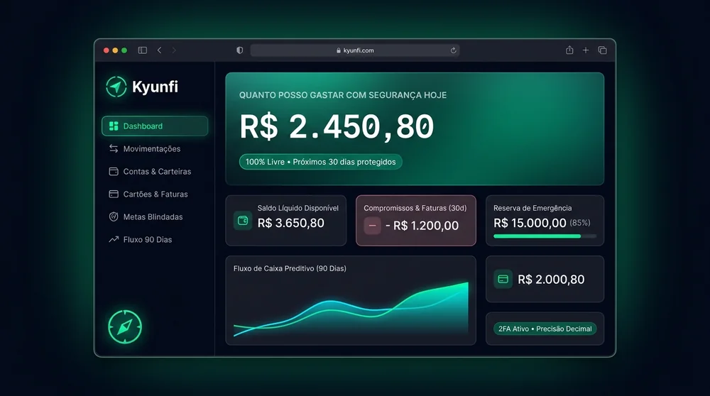

SaaS & PWA Financeiro
Destaque Principal

Kyunfi
Plataforma SaaS completa de gestão financeira pessoal com motor matemático exclusivo de Disponível Seguro (Safe to Spend), fluxo de caixa preditivo a 90 dias, controle de faturas, metas blindadas, transações ACID no MySQL e segurança com autenticação 2FA TOTP.
Next.js 16
React 19
TypeScript
MySQL
Sequelize
Decimal.js
TailwindCSS
2FA & JWT